Des chantiers concrets, jusque dans les finitions.
Une sélection de réalisations réelles : plâtrerie, corniches et moulures, restauration de décors, mortier de chaux, fausse pierre et carrelage.
Des réalisations présentées par métier.
Chaque galerie montre les étapes importantes du chantier, avec une sélection volontairement resserrée pour mettre en valeur le travail plutôt que multiplier les images similaires.
Structurer et transformer les espaces.
Plafonds, cloisons, doublages, reprises et finitions en plâtre ou plaques de plâtre.
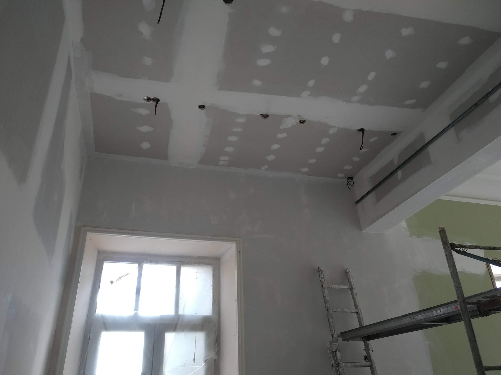
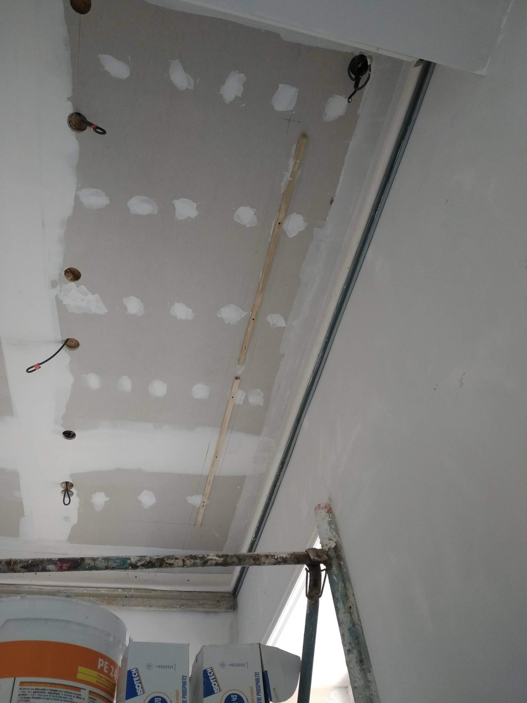
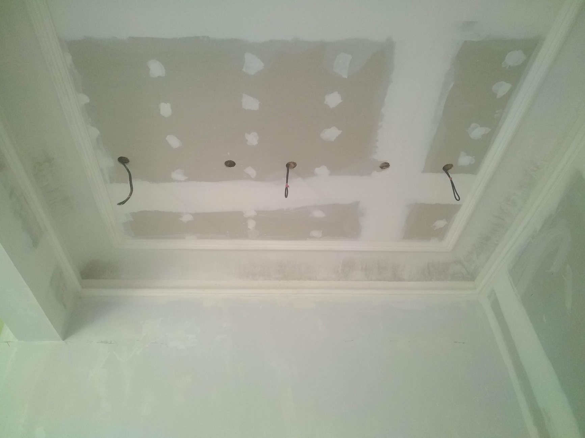
Des éléments décoratifs réalisés sur mesure.
Préparation, fabrication, pose et finition de corniches et moulures adaptées à chaque intérieur.
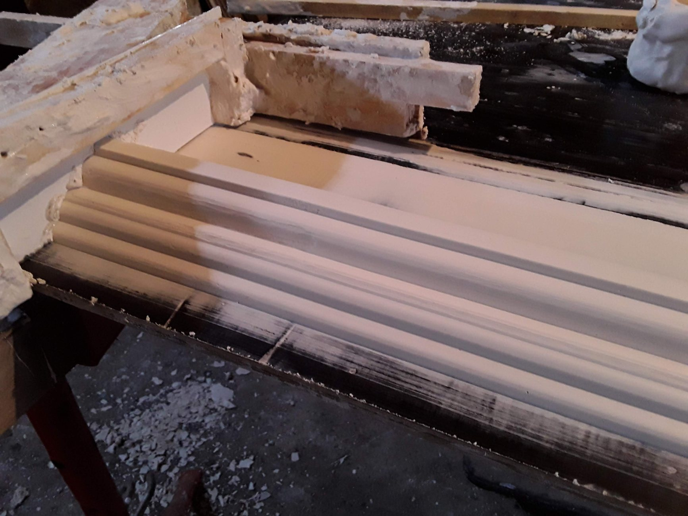
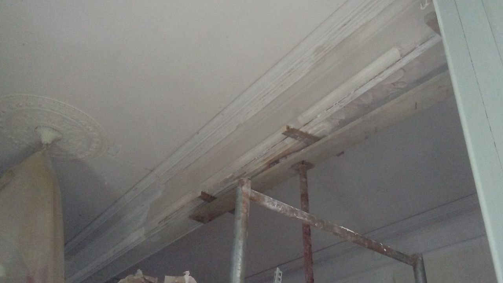
Redonner vie aux décors anciens.
Restauration de rosaces, moulures et décors en plâtre, complétée par une réalisation de rosace décorative sur mesure.
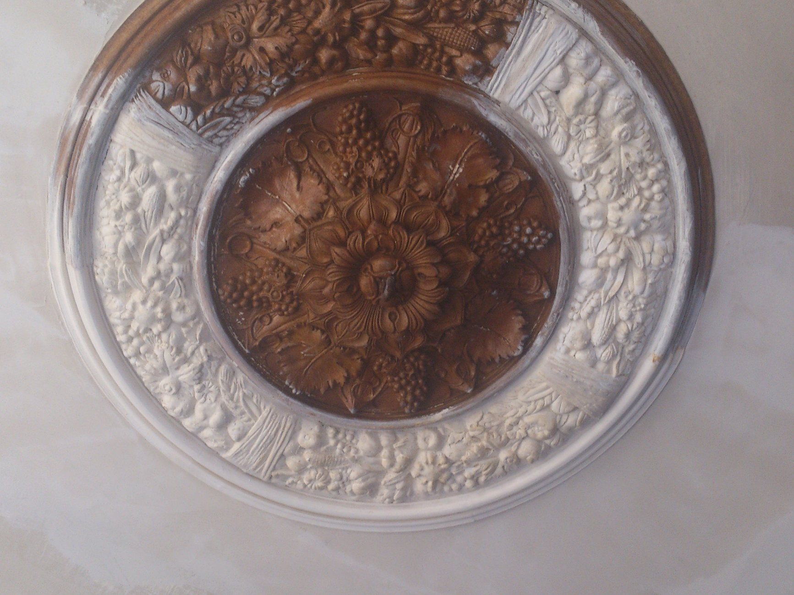
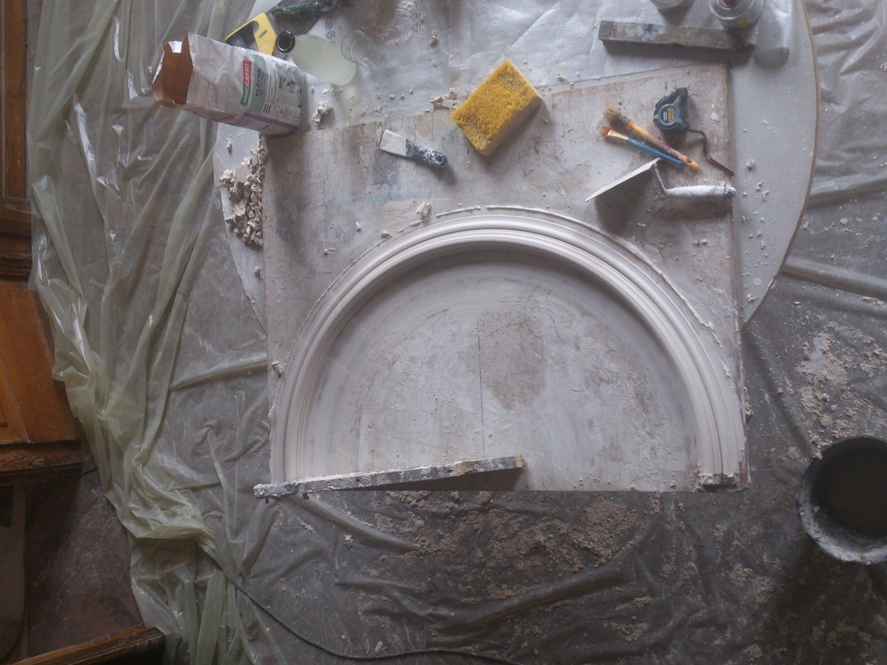
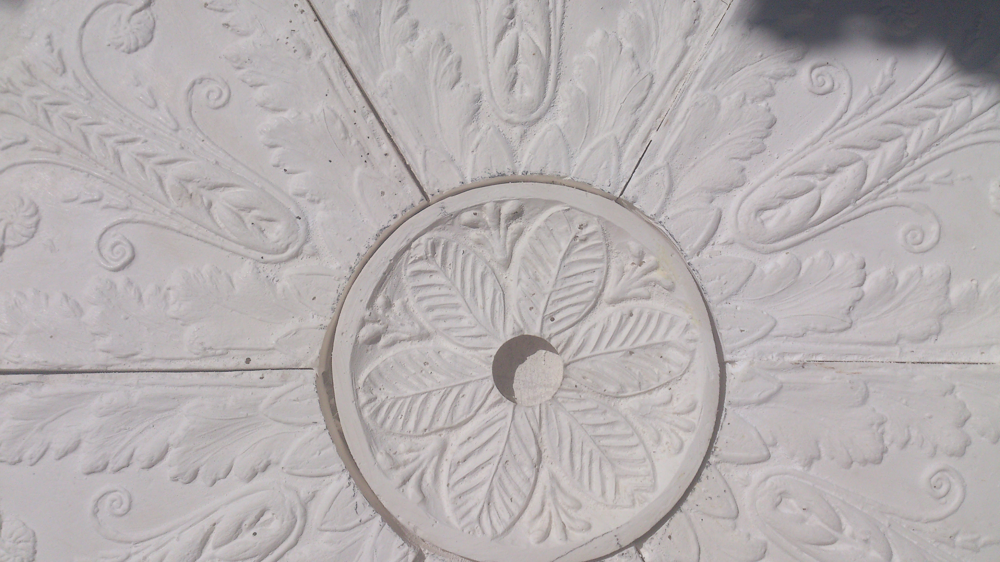
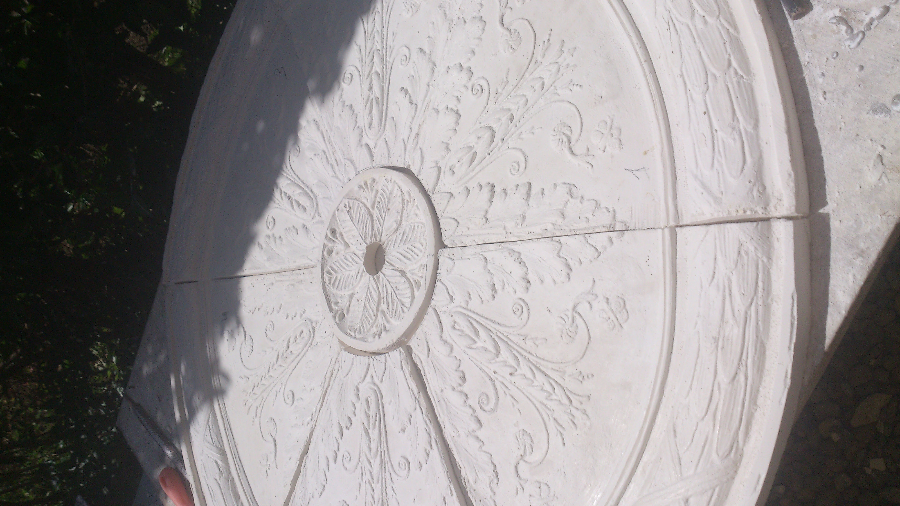
Travailler la matière et l’aspect minéral.
Préparation, mise en forme et finition d’éléments réalisés au mortier de chaux avec aspect pierre.
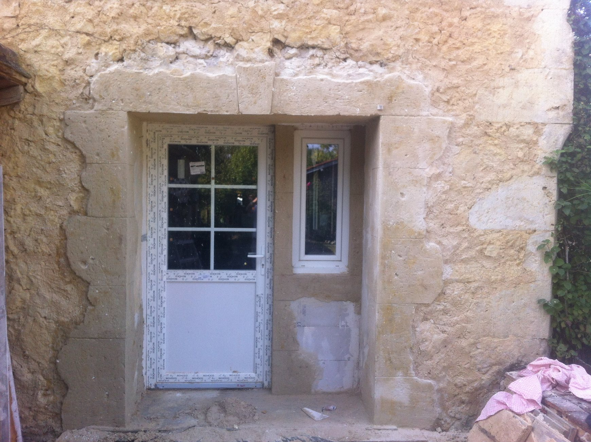
Des surfaces propres et durables.
Pose de carrelage et de faïence avec attention portée aux alignements, découpes et finitions.
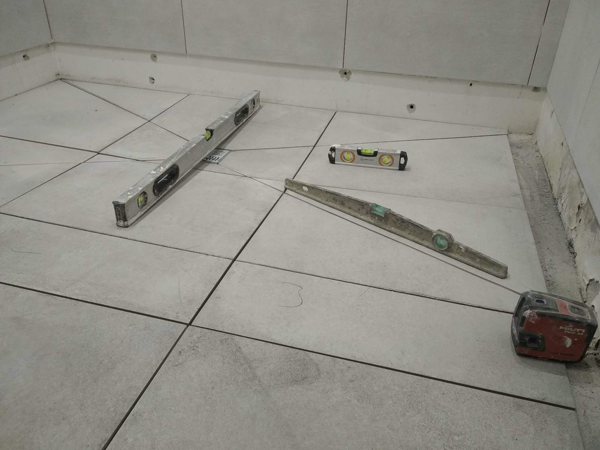
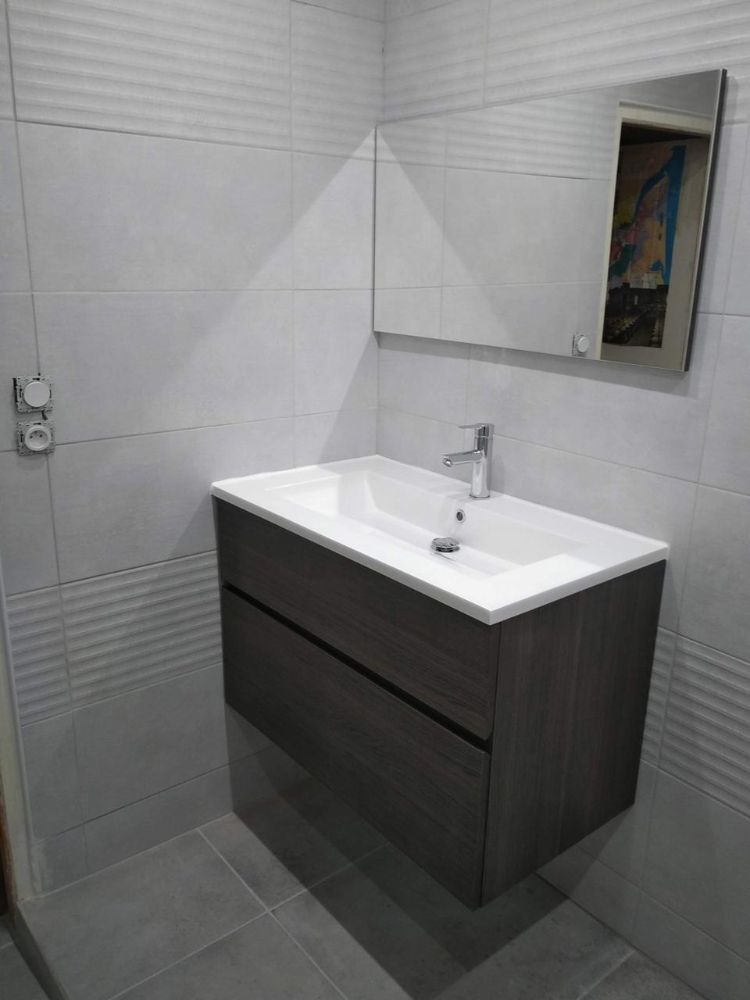
Le geste du plâtrier.
Application d’un enduit plâtre traditionnel sur murs et plafonds, avec préparation des supports et recherche d’une finition régulière.
Un savoir-faire artisanal mis à l’honneur.
Un article consacré au parcours d’Éric Pellegrino et à son travail artisanal dans La Dépêche du Dimanche, édition Condom Armagnac.
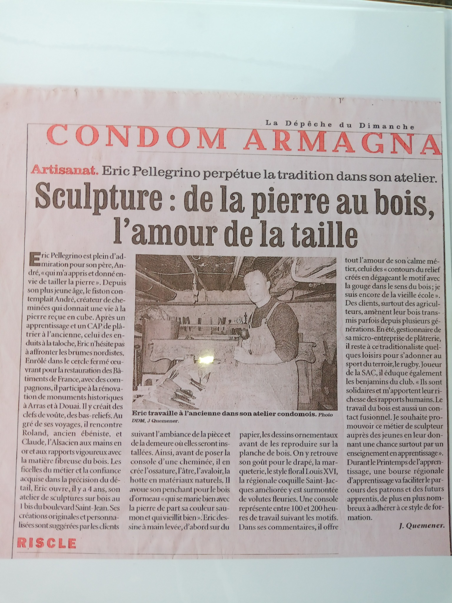
Un projet de rénovation ?
Parlons-en.
Déplacement et devis gratuits dans tout le Gers.